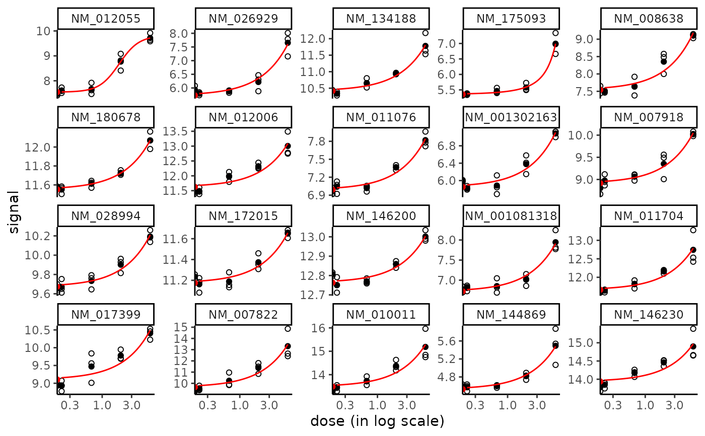
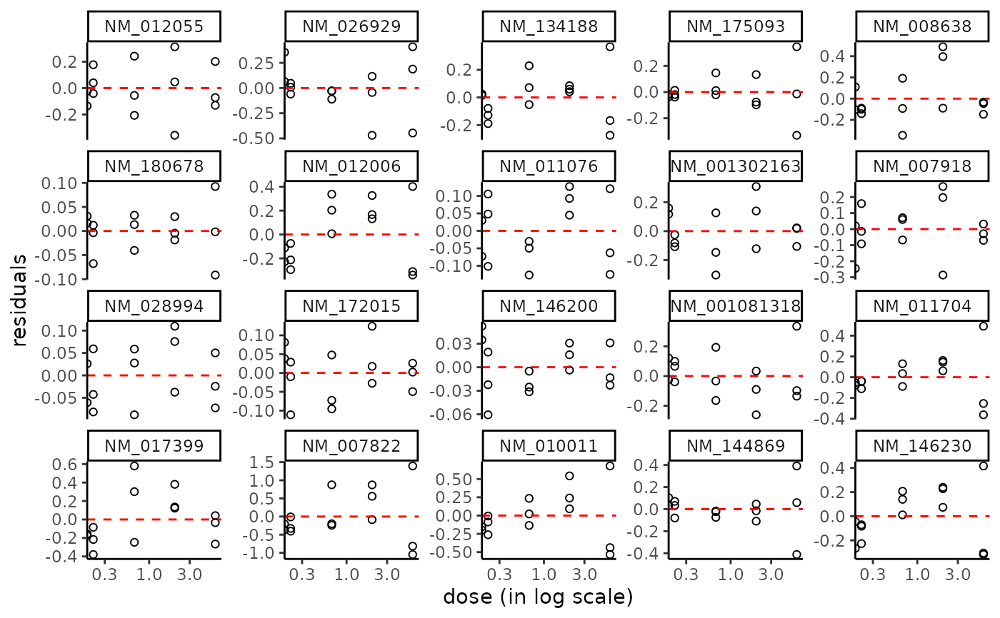
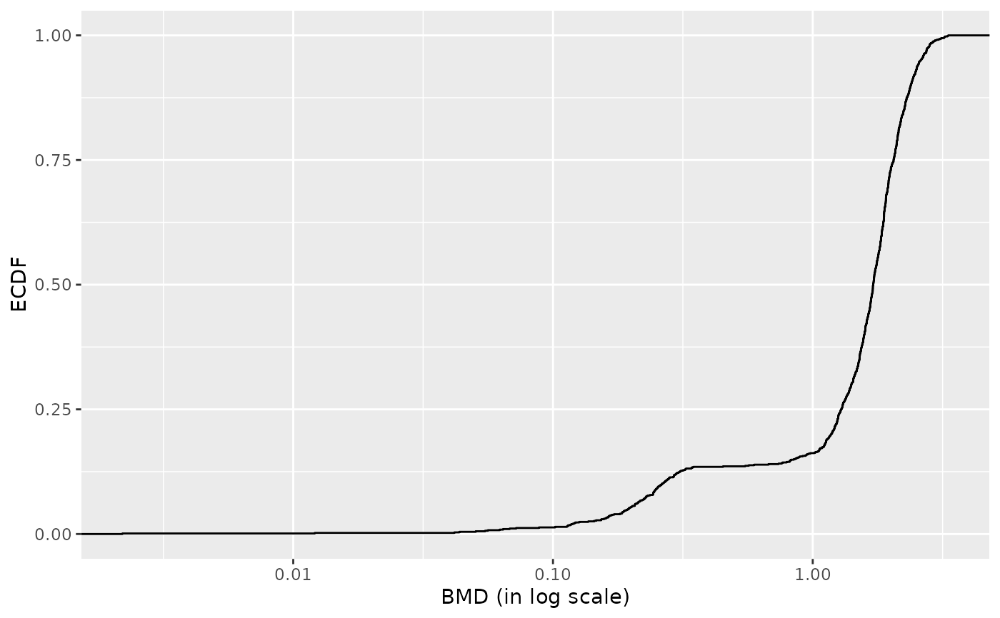
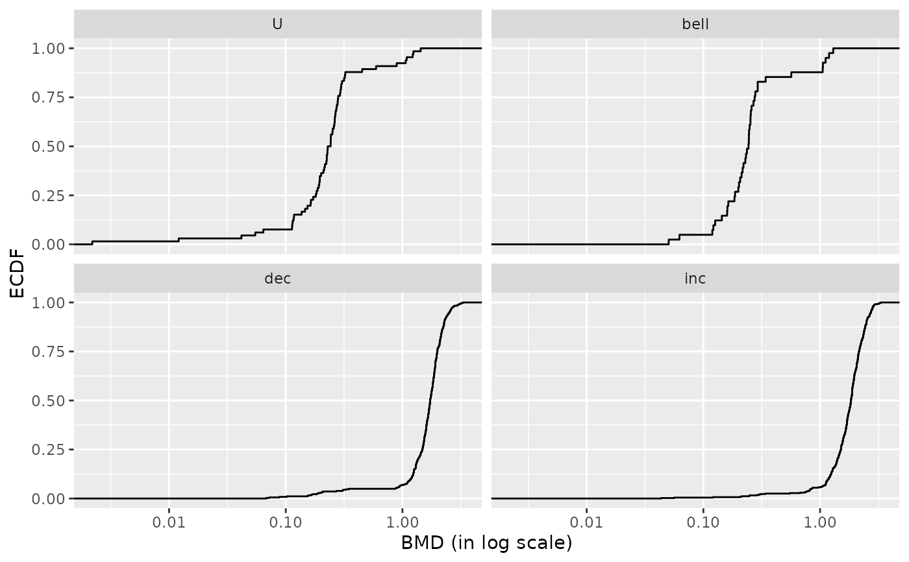
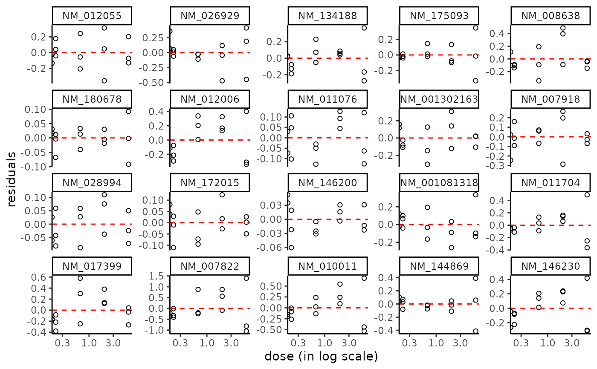
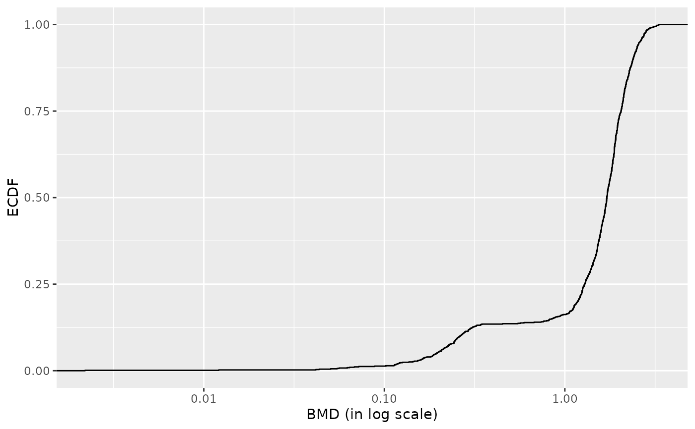
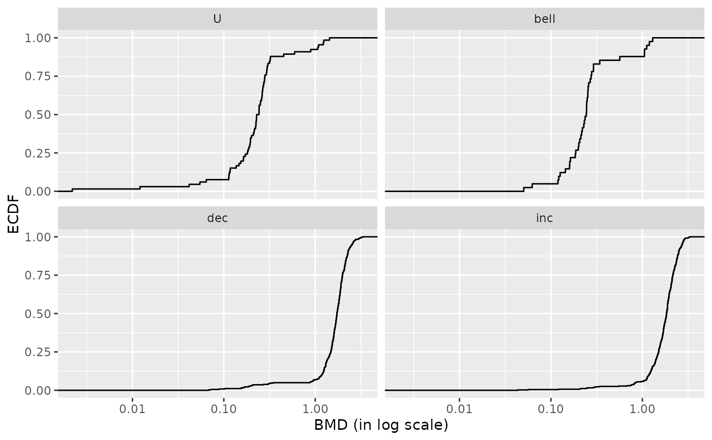

Dose-response kidney transcriptomic effect of Tetrachloroethylene in mouse
Zhou.RdRNAseq data set for the effect of Tetrachloroethylene (PCE) on mouse kidney. This environmental contaminant was administered by gavage in aqueous vehicle to male B6C3F1/J mice, within a dose-reponse design including five doses plus the control.
Usage
data(Zhou_kidney_pce)Format
Zhou_kidney_pce contains one row per transcript, with the first column corresponding to the identifier of each transcript, and the other columns giving the count of reads for each replicate at each dose. In the first line, after the name for the identifier column, we have the tested doses for each corresponding replicate.
Source
Zhou, Y. H., Cichocki, J. A., Soldatow, V. Y., Scholl, E. H., Gallins, P. J., Jima, D., ... & Rusyn, I. 2017. Comparative dose-response analysis of liver and kidney transcriptomic effects of trichloroethylene and tetrachloroethylene in B6C3F1 mouse. Toxicological sciences, 160(1), 95-110.
Examples
# (1) load of data
#
data(Zhou_kidney_pce)
head(Zhou_kidney_pce)
#> V1 V2 V3 V4 V5 V6 V7 V8 V9 V10
#> 1 RefSeq 0 0 0.22 0.22 0.22 0.67 0.67 0.67 2
#> 2 NM_144958 2072 2506 2519.00 2116.00 1999.00 2113.00 2219.00 2322.00 2359
#> 3 NR_102758 0 0 0.00 0.00 0.00 0.00 0.00 0.00 0
#> 4 NM_172405 198 265 250.00 245.00 212.00 206.00 227.00 246.00 265
#> 5 NM_029777 18 29 25.00 19.00 19.00 13.00 22.00 19.00 19
#> 6 NM_001130188 0 0 0.00 0.00 0.00 0.00 0.00 1.00 0
#> V11 V12 V13 V14 V15
#> 1 2 2 6 6 6
#> 2 1932 1705 2110 2311 2140
#> 3 0 0 0 0 0
#> 4 205 175 288 315 242
#> 5 26 16 26 32 33
#> 6 0 0 1 0 1
str(Zhou_kidney_pce)
#> 'data.frame': 33395 obs. of 15 variables:
#> $ V1 : chr "RefSeq" "NM_144958" "NR_102758" "NM_172405" ...
#> $ V2 : int 0 2072 0 198 18 0 0 3 0 61 ...
#> $ V3 : int 0 2506 0 265 29 0 0 1 0 65 ...
#> $ V4 : num 0.22 2519 0 250 25 ...
#> $ V5 : num 0.22 2116 0 245 19 ...
#> $ V6 : num 0.22 1999 0 212 19 ...
#> $ V7 : num 0.67 2113 0 206 13 ...
#> $ V8 : num 0.67 2219 0 227 22 ...
#> $ V9 : num 0.67 2322 0 246 19 ...
#> $ V10: int 2 2359 0 265 19 0 0 0 0 91 ...
#> $ V11: int 2 1932 0 205 26 0 0 0 0 59 ...
#> $ V12: int 2 1705 0 175 16 0 0 0 0 47 ...
#> $ V13: int 6 2110 0 288 26 1 0 0 0 42 ...
#> $ V14: int 6 2311 0 315 32 0 0 0 0 60 ...
#> $ V15: int 6 2140 0 242 33 1 0 2 1 58 ...
# \donttest{
# (2) import, check, normalization and transformation of a sample
# of one of those datasets
#
d <- Zhou_kidney_pce[1:501, ]
(o <- RNAseqdata(d))
#> Just wait, the transformation using regularized logarithm (rlog) may
#> take a few minutes.
#> converting counts to integer mode
#> Warning:
#> To optimize the dose-response modelling, it is recommended to use a
#> dose-response design with at least six different tested doses.
#> Elements of the experimental design in order to check the coding of the data:
#> Tested doses and number of replicates for each dose:
#>
#> 0 0.22 0.67 2 6
#> 2 3 3 3 3
#> Number of items: 500
#> Identifiers of the first 20 items:
#> [1] "NM_144958" "NR_102758" "NM_172405" "NM_029777" "NM_001130188"
#> [6] "NM_207141" "NM_001162368" "NM_008117" "NM_001168290" "NM_010910"
#> [11] "NM_001004147" "NM_001146318" "NM_145597" "NM_001161797" "NM_021483"
#> [16] "NR_002862" "NR_033520" "NM_134027" "NM_010381" "NM_019388"
#> Data were normalized with respect to library size and tranformed using
#> the following method: rlog
plot(o)
# (3) analysis of the whole dataset (for kidney and PCE)
# (may be long to run)
d <- Zhou_kidney_pce
(o <- RNAseqdata(d))
#> Just wait, the transformation using regularized logarithm (rlog) may
#> take a few minutes.
#> converting counts to integer mode
#> Warning:
#> To optimize the dose-response modelling, it is recommended to use a
#> dose-response design with at least six different tested doses.
#> Elements of the experimental design in order to check the coding of the data:
#> Tested doses and number of replicates for each dose:
#>
#> 0 0.22 0.67 2 6
#> 2 3 3 3 3
#> Number of items: 33394
#> Identifiers of the first 20 items:
#> [1] "NM_144958" "NR_102758" "NM_172405" "NM_029777" "NM_001130188"
#> [6] "NM_207141" "NM_001162368" "NM_008117" "NM_001168290" "NM_010910"
#> [11] "NM_001004147" "NM_001146318" "NM_145597" "NM_001161797" "NM_021483"
#> [16] "NR_002862" "NR_033520" "NM_134027" "NM_010381" "NM_019388"
#> Data were normalized with respect to library size and tranformed using
#> the following method: rlog
plot(o)
(s <- itemselect(o, select.method = "quadratic", FDR = 0.01))
#> converting counts to integer mode
#> the design formula contains one or more numeric variables with integer values,
#> specifying a model with increasing fold change for higher values.
#> did you mean for this to be a factor? if so, first convert
#> this variable to a factor using the factor() function
#> the design formula contains one or more numeric variables that have mean or
#> standard deviation larger than 5 (an arbitrary threshold to trigger this message).
#> Including numeric variables with large mean can induce collinearity with the intercept.
#> Users should center and scale numeric variables in the design to improve GLM convergence.
#> estimating size factors
#> estimating dispersions
#> gene-wise dispersion estimates
#> mean-dispersion relationship
#> final dispersion estimates
#> fitting model and testing
#> Number of selected items using a quadratic trend test with an FDR of 0.01: 930
#> Identifiers of the first 20 most responsive items:
#> [1] "NM_012055" "NM_026929" "NM_134188" "NM_175093" "NM_008638"
#> [6] "NM_180678" "NM_012006" "NM_011076" "NM_001302163" "NM_007918"
#> [11] "NM_028994" "NM_172015" "NM_146200" "NM_001081318" "NM_011704"
#> [16] "NM_017399" "NM_007822" "NM_010011" "NM_144869" "NM_146230"
(f <- drcfit(s, progressbar = TRUE))
#> The fitting may be long if the number of selected items is high.
#>
|
| | 0%
|
| | 1%
|
|= | 1%
|
|= | 2%
|
|== | 2%
|
|== | 3%
|
|== | 4%
|
|=== | 4%
|
|=== | 5%
|
|==== | 5%
|
|==== | 6%
|
|===== | 6%
|
|===== | 7%
|
|===== | 8%
|
|====== | 8%
|
|====== | 9%
|
|======= | 9%
|
|======= | 10%
|
|======= | 11%
|
|======== | 11%
|
|======== | 12%
|
|========= | 12%
|
|========= | 13%
|
|========= | 14%
|
|========== | 14%
|
|========== | 15%
|
|=========== | 15%
|
|=========== | 16%
|
|============ | 16%
|
|============ | 17%
|
|============ | 18%
|
|============= | 18%
|
|============= | 19%
|
|============== | 19%
|
|============== | 20%
|
|============== | 21%
|
|=============== | 21%
|
|=============== | 22%
|
|================ | 22%
|
|================ | 23%
|
|================ | 24%
|
|================= | 24%
|
|================= | 25%
|
|================== | 25%
|
|================== | 26%
|
|=================== | 26%
|
|=================== | 27%
|
|=================== | 28%
|
|==================== | 28%
|
|==================== | 29%
|
|===================== | 29%
|
|===================== | 30%
|
|===================== | 31%
|
|====================== | 31%
|
|====================== | 32%
|
|======================= | 32%
|
|======================= | 33%
|
|======================= | 34%
|
|======================== | 34%
|
|======================== | 35%
|
|========================= | 35%
|
|========================= | 36%
|
|========================== | 36%
|
|========================== | 37%
|
|========================== | 38%
|
|=========================== | 38%
|
|=========================== | 39%
|
|============================ | 39%
|
|============================ | 40%
|
|============================ | 41%
|
|============================= | 41%
|
|============================= | 42%
|
|============================== | 42%
|
|============================== | 43%
|
|============================== | 44%
|
|=============================== | 44%
|
|=============================== | 45%
|
|================================ | 45%
|
|================================ | 46%
|
|================================= | 46%
|
|================================= | 47%
|
|================================= | 48%
|
|================================== | 48%
|
|================================== | 49%
|
|=================================== | 49%
|
|=================================== | 50%
|
|=================================== | 51%
|
|==================================== | 51%
|
|==================================== | 52%
|
|===================================== | 52%
|
|===================================== | 53%
|
|===================================== | 54%
|
|====================================== | 54%
|
|====================================== | 55%
|
|======================================= | 55%
|
|======================================= | 56%
|
|======================================== | 56%
|
|======================================== | 57%
|
|======================================== | 58%
|
|========================================= | 58%
|
|========================================= | 59%
|
|========================================== | 59%
|
|========================================== | 60%
|
|========================================== | 61%
|
|=========================================== | 61%
|
|=========================================== | 62%
|
|============================================ | 62%
|
|============================================ | 63%
|
|============================================ | 64%
|
|============================================= | 64%
|
|============================================= | 65%
|
|============================================== | 65%
|
|============================================== | 66%
|
|=============================================== | 66%
|
|=============================================== | 67%
|
|=============================================== | 68%
|
|================================================ | 68%
|
|================================================ | 69%
|
|================================================= | 69%
|
|================================================= | 70%
|
|================================================= | 71%
|
|================================================== | 71%
|
|================================================== | 72%
|
|=================================================== | 72%
|
|=================================================== | 73%
|
|=================================================== | 74%
|
|==================================================== | 74%
|
|==================================================== | 75%
|
|===================================================== | 75%
|
|===================================================== | 76%
|
|====================================================== | 76%
|
|====================================================== | 77%
|
|====================================================== | 78%
|
|======================================================= | 78%
|
|======================================================= | 79%
|
|======================================================== | 79%
|
|======================================================== | 80%
|
|======================================================== | 81%
|
|========================================================= | 81%
|
|========================================================= | 82%
|
|========================================================== | 82%
|
|========================================================== | 83%
|
|========================================================== | 84%
|
|=========================================================== | 84%
|
|=========================================================== | 85%
|
|============================================================ | 85%
|
|============================================================ | 86%
|
|============================================================= | 86%
|
|============================================================= | 87%
|
|============================================================= | 88%
|
|============================================================== | 88%
|
|============================================================== | 89%
|
|=============================================================== | 89%
|
|=============================================================== | 90%
|
|=============================================================== | 91%
|
|================================================================ | 91%
|
|================================================================ | 92%
|
|================================================================= | 92%
|
|================================================================= | 93%
|
|================================================================= | 94%
|
|================================================================== | 94%
|
|================================================================== | 95%
|
|=================================================================== | 95%
|
|=================================================================== | 96%
|
|==================================================================== | 96%
|
|==================================================================== | 97%
|
|==================================================================== | 98%
|
|===================================================================== | 98%
|
|===================================================================== | 99%
|
|======================================================================| 99%
|
|======================================================================| 100%
#> Results of the fitting using the AICc to select the best fit model
#> 25 dose-response curves out of 930 previously selected were removed
#> because no model could be fitted reliably.
#> Distribution of the chosen models among the 905 fitted dose-response curves:
#>
#> Hill linear exponential Gauss-probit
#> 1 769 26 86
#> log-Gauss-probit
#> 23
#> Distribution of the trends (curve shapes) among the 905 fitted dose-response curves:
#>
#> U bell dec inc
#> 67 41 363 434
head(f$fitres)
#> id irow adjpvalue model nbpar b c d
#> 1 NM_012055 22032 6.756994e-42 Hill 4 2.70352170 9.81098 7.546171
#> 2 NM_026929 14409 4.585837e-37 linear 2 0.31249103 NA 5.726443
#> 3 NM_134188 986 5.247894e-36 linear 2 0.23123224 NA 10.418319
#> 4 NM_175093 26225 3.843143e-33 exponential 3 0.23781018 NA 5.356573
#> 5 NM_008638 30943 1.187148e-32 linear 2 0.27254307 NA 7.543362
#> 6 NM_180678 14173 9.154882e-29 linear 2 0.08641914 NA 11.552080
#> e f SDres typology trend y0 yatdosemax yrange
#> 1 1.885806 NA 0.21185102 H.inc inc 7.546171 9.716030 2.1698591
#> 2 NA NA 0.25622487 L.inc inc 5.726443 7.601389 1.8749462
#> 3 NA NA 0.17560544 L.inc inc 10.418319 11.805713 1.3873934
#> 4 2.906675 NA 0.16172244 E.inc.convex inc 5.356573 6.992494 1.6359211
#> 5 NA NA 0.23350538 L.inc inc 7.543362 9.178620 1.6352584
#> 6 NA NA 0.04747107 L.inc inc 11.552080 12.070595 0.5185148
#> maxychange xextrem yextrem
#> 1 2.1698591 NA NA
#> 2 1.8749462 NA NA
#> 3 1.3873934 NA NA
#> 4 1.6359211 NA NA
#> 5 1.6352584 NA NA
#> 6 0.5185148 NA NA
plot(f)
#> Warning: log-10 transformation introduced infinite values.
#> Warning: log-10 transformation introduced infinite values.
#> Warning: log-10 transformation introduced infinite values.

plot(f, dose_log_trans = TRUE)
#> Warning: log-10 transformation introduced infinite values.
#> Warning: log-10 transformation introduced infinite values.
#> Warning: log-10 transformation introduced infinite values.
 plot(f, plot.type = "dose_residuals")
#> Warning: log-10 transformation introduced infinite values.

r <- bmdcalc(f, z = 1)
plot(r)

plot(r, by = "trend")

head(r$res)
#> id irow adjpvalue model nbpar b c d
#> 1 NM_012055 22032 6.756994e-42 Hill 4 2.70352170 9.81098 7.546171
#> 2 NM_026929 14409 4.585837e-37 linear 2 0.31249103 NA 5.726443
#> 3 NM_134188 986 5.247894e-36 linear 2 0.23123224 NA 10.418319
#> 4 NM_175093 26225 3.843143e-33 exponential 3 0.23781018 NA 5.356573
#> 5 NM_008638 30943 1.187148e-32 linear 2 0.27254307 NA 7.543362
#> 6 NM_180678 14173 9.154882e-29 linear 2 0.08641914 NA 11.552080
#> e f SDres typology trend y0 yatdosemax yrange
#> 1 1.885806 NA 0.21185102 H.inc inc 7.546171 9.716030 2.1698591
#> 2 NA NA 0.25622487 L.inc inc 5.726443 7.601389 1.8749462
#> 3 NA NA 0.17560544 L.inc inc 10.418319 11.805713 1.3873934
#> 4 2.906675 NA 0.16172244 E.inc.convex inc 5.356573 6.992494 1.6359211
#> 5 NA NA 0.23350538 L.inc inc 7.543362 9.178620 1.6352584
#> 6 NA NA 0.04747107 L.inc inc 11.552080 12.070595 0.5185148
#> maxychange xextrem yextrem BMD.zSD BMR.zSD BMD.xfold BMR.xfold
#> 1 2.1698591 NA NA 0.8140636 7.758022 1.458975 8.300788
#> 2 1.8749462 NA NA 0.8199431 5.982668 1.832514 6.299087
#> 3 1.3873934 NA NA 0.7594332 10.593925 4.505565 11.460151
#> 4 1.6359211 NA NA 1.5080487 5.518295 3.428164 5.892230
#> 5 1.6352584 NA NA 0.8567651 7.776867 2.767769 8.297698
#> 6 0.5185148 NA NA 0.5493120 11.599551 NA 12.707288
# }
plot(f, plot.type = "dose_residuals")
#> Warning: log-10 transformation introduced infinite values.

r <- bmdcalc(f, z = 1)
plot(r)

plot(r, by = "trend")

head(r$res)
#> id irow adjpvalue model nbpar b c d
#> 1 NM_012055 22032 6.756994e-42 Hill 4 2.70352170 9.81098 7.546171
#> 2 NM_026929 14409 4.585837e-37 linear 2 0.31249103 NA 5.726443
#> 3 NM_134188 986 5.247894e-36 linear 2 0.23123224 NA 10.418319
#> 4 NM_175093 26225 3.843143e-33 exponential 3 0.23781018 NA 5.356573
#> 5 NM_008638 30943 1.187148e-32 linear 2 0.27254307 NA 7.543362
#> 6 NM_180678 14173 9.154882e-29 linear 2 0.08641914 NA 11.552080
#> e f SDres typology trend y0 yatdosemax yrange
#> 1 1.885806 NA 0.21185102 H.inc inc 7.546171 9.716030 2.1698591
#> 2 NA NA 0.25622487 L.inc inc 5.726443 7.601389 1.8749462
#> 3 NA NA 0.17560544 L.inc inc 10.418319 11.805713 1.3873934
#> 4 2.906675 NA 0.16172244 E.inc.convex inc 5.356573 6.992494 1.6359211
#> 5 NA NA 0.23350538 L.inc inc 7.543362 9.178620 1.6352584
#> 6 NA NA 0.04747107 L.inc inc 11.552080 12.070595 0.5185148
#> maxychange xextrem yextrem BMD.zSD BMR.zSD BMD.xfold BMR.xfold
#> 1 2.1698591 NA NA 0.8140636 7.758022 1.458975 8.300788
#> 2 1.8749462 NA NA 0.8199431 5.982668 1.832514 6.299087
#> 3 1.3873934 NA NA 0.7594332 10.593925 4.505565 11.460151
#> 4 1.6359211 NA NA 1.5080487 5.518295 3.428164 5.892230
#> 5 1.6352584 NA NA 0.8567651 7.776867 2.767769 8.297698
#> 6 0.5185148 NA NA 0.5493120 11.599551 NA 12.707288
# }